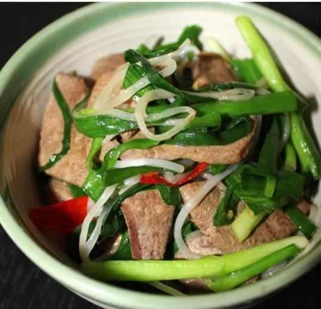
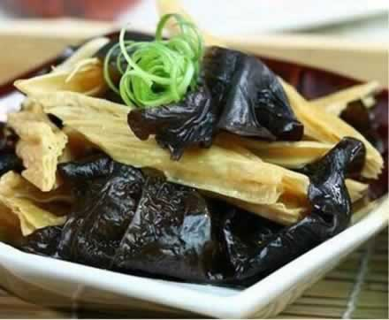

准妈妈孕期要注重补锌
锌是人体必不可少的微量元素，参与体内80多种酶的活动和代谢，它与核酸、蛋白质的合成，与糖类、维生素的代谢，与胰腺、性腺、脑垂体的活动等关系十分密切，发挥着非常重要的生理功能。锌还能刺激细胞的分裂，是促进组织生长，及有利智力发育的重要物质。
怀孕的妇女担负着自身和胎儿两个人的营养需要，此阶段锌元素对孕期保健更有意义。人体内的锌主要贮存于骨骼内。锌不像钙那样，胎儿有能力将母体骨骼内的钙随时动员出来加以吸收，妊娠期间一旦锌摄入量不足时，母体骨骼中锌含量并不下降，而胎儿血浆中锌浓度此时会迅速下降。另外，准妈妈自身的血锌水平可影响到孕妇子宫的收缩，血锌水平正常时子宫收缩有力，反之则子宫收缩无力。因此，准妈妈补锌也有助于不久后的顺利分娩。
对准妈妈来说，如何补锌才好呢？通过饮食途径补锌即可，也最有效。苹果富含锌等微量元素，还富含脂质、糖类、多种维生素等营养成分。孕妇每天吃1～2个苹果就可以满足锌的需要量。另外，时常吃些牡蛎、动物肝脏、肉、蛋、鱼以及粗粮、干豆等含锌丰富的食物，都可以为身体补锌；常吃一点核桃、瓜子等含锌较多的零食，也能起到较好的补锌作用。
本周推荐尝试食谱1：
豆芽炒猪肝
推荐理由：此菜含有丰富的优良蛋白质及铁、锌、丰富的维生素及叶酸，可预防孕妇贫血和胎儿畸形。
食谱原料：
豆芽400克，猪肝100克，淀粉10克，花生油、盐、酱油、醋、料酒、味精各适量。
制作方法：
1、将豆芽择去须、根，洗干净，放入沸水中烫一下，捞出，控净水。
2、将猪肝洗净，切成薄片。
3、将淀粉放入大碗内，加适量水调成稠糊状，再将切好的肝片放入，搅拌均匀。
4、锅置火上，烧热后放入花生油，加入精盐，待油热后，将豆芽倒入，翻炒几下，滴入几滴醋，炒匀，盛入盘中。
5、锅置火上，放入花生油，待油烧至七成热时，倒入肝片，迅速炒散，然后加入酱油、料酒，翻炒几下，再将炒好的豆芽倒入锅内，加味精，翻炒均匀，装盘即成。
本周推荐尝试食谱2：
腐竹银芽黑木耳
推荐理由：此菜含有丰富的钙、磷、铁、锌、维生素C等多种营养素，是胎儿骨骼发育所必需的食品。
食谱原料：
腐竹150克，绿豆芽、水发黑木耳各100克，花生油20克，香油、盐各5克，水淀粉15克，姜10克，黄豆芽汤200克。
制作方法：
1、腐竹放在盆内，倒入开水盖严，浸泡至无硬心时捞出，切成3-4厘米长的段。
2、姜洗净，切成末；绿豆芽择洗干净，放开水内氽一下捞出；黑木耳择洗干净，将大朵撕成小朵，也可在开水中过一下捞出。
3、炒锅上火，放油烧热，下姜末略炸，放入绿豆芽、黑木耳煸炒几下，加黄豆芽汤、精盐、倒入腐竹，用小火慢烧3分钟，转大火收汁，用水淀粉勾芡，淋入香油，盛入盘内即成。